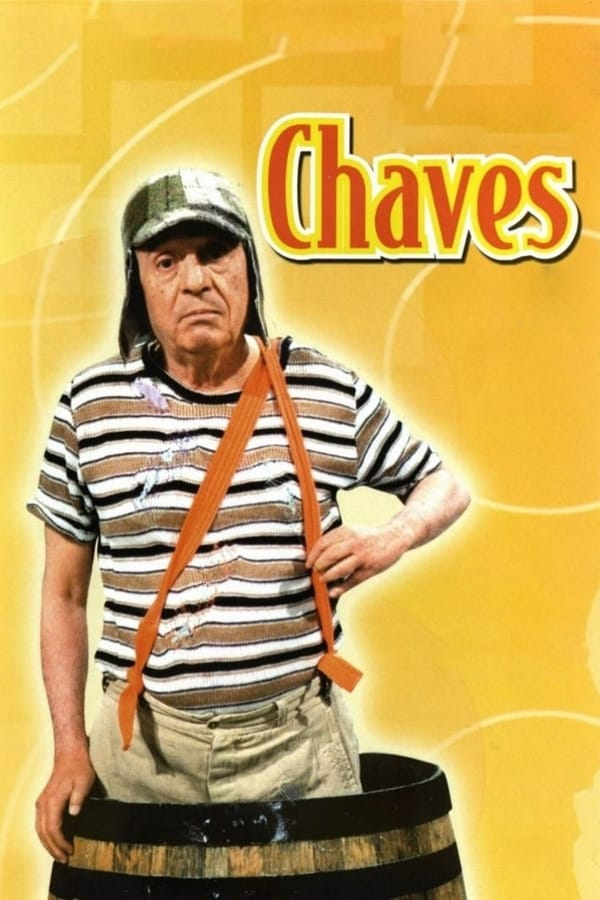

Aborda as interações de um grupo de pessoas que moram em uma vila. O protagonista, Chaves, é um garoto órfão de oito anos que muitas vezes, enfrenta problemas com adultos, incluindo Seu Madruga, Dona Florinda e Dona Clotilde devido a mal-entendimentos, distrações ou travessuras. Ele também convive com seus amigos Quico e Chiquinha, que são da mesma faixa etária. Muitas vezes, Chaves é encontrado em um barril de madeira, segundo o próprio personagem, é apenas um esconderijo, na verdade ele mora na casa de número 8. Praticamente, a trama se desenrola nesta vila, Seu Barriga, o dono da mesma e os moradores Seu Madruga, Dona Neves e Chiquinha (na casa 72), Dona Clotilde, apelidada de Bruxa do 71 por sua aparência e o número de sua residência, na casa 14 vivem Dona Florinda e seu filho Quico.
